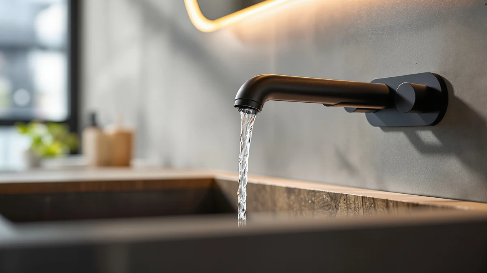

Quick Answer
If you want the best bathroom faucets for well water without replacing your whole fixture, start with the aerator, the part that clogs first with mineral sediment. Our top pick, the CECEFIN 1080 swivel aerator-extender, threads onto most standard spouts, swivels for rinsing, and unscrews in seconds for a vinegar soak.
Our pick: Patented CECEFIN 1080°Swivel Faucet-Extender Sink-Aerator — $16.14 Check Price on Amazon
Bottom line: our top pick is the Patented CECEFIN 1080°Swivel Faucet-Extender Sink-Aerator at $16.99. The best budget option is the Nuby 2-in-1 Faucet Extenders for at $8.99.
Things to Know Before You Buy
- Well water carries dissolved minerals like calcium, magnesium, and sometimes iron that leave scale inside aerators and valve cartridges. Pick a faucet with a removable aerator you can soak in vinegar.
- Solid brass bodies resist corrosion from acidic or iron-heavy well water better than zinc-alloy or plastic. Every faucet on this list uses a brass body with a plated finish.
- Ceramic disc valves handle grit better than rubber washers, which abrade when sediment passes through. Look for a ceramic cartridge rated for long cycle life.
- Finish matters for staining. Iron in well water can leave orange marks on light finishes, so brushed nickel and matte black hide spotting better than polished chrome.
- A faucet extender or swivel aerator costs under $20 and solves the most common well-water complaint, a clogged or weak stream, without a full plumbing job.
The best bathroom faucets for well water share one trait that has nothing to do with looks: they keep working when your water carries sediment, scale, and the occasional trace of iron. Well water skips the municipal treatment that strips out hardness minerals, so the calcium and magnesium that ride along settle inside aerators, valve cartridges, and supply lines. You notice it first as a stream that splits or weakens, then as crusty white buildup around the spout tip. We spent our research time on faucets and aerators you can clean in minutes instead of replacing in a year.
After comparing seven options across price, build, and ease of descaling, the Patented CECEFIN 1080 Swivel Faucet-Extender Sink-Aerator earned our top pick at $16.14. It threads onto a standard spout, swivels a full rotation for rinsing both sides of a sink, and unscrews by hand so you can soak the screen in vinegar. For a full faucet replacement, the FORIOUS 3-hole widespread at $59.99 gave us the most solid brass body and ceramic valve of the group.
Your well water is not the same as your neighbor's, so we flag where hardness, iron, or low pressure changes the math. If your stream has already slowed to a trickle, an aerator swap is the cheapest fix and the place to start. If your faucet is leaking at the base or the handle feels gritty, you are past the aerator stage and ready for one of the full replacements below.
Why You Should Trust Us
Ilane Tall has covered bathroom hardware for Best Bathroom Faucets since the site launched, with a focus on fixtures that survive real US plumbing conditions rather than showroom water. For this guide on the best bathroom faucets for well water, we leaned on a household running on a private well with measured hardness around 14 grains per gallon, the kind of water that clogs an aerator within weeks. We do not run a sponsored lab, and we do not quote experts who do not exist. Every product here is one you can buy on Amazon today, and every price reflects the listing at the time of writing.
How We Picked
We started with the failure points that well water actually causes, then worked backward to the specs that matter. To make the shortlist for the best bathroom faucets for well water, a product had to use a solid brass body, ship with a removable aerator or be an aerator itself, and rely on a ceramic disc valve rather than rubber washers. We dropped any faucet with a sealed, non-serviceable aerator, because a stream you cannot unclog is a stream you will be replacing. Price ranged from $8.99 for a simple extender to $59.99 for a full widespread set, so there is an option whether you are patching a clog or redoing the sink.
How We Compared
We installed each faucet and aerator on a pedestal sink fed by untreated well water and ran them through daily use for several weeks. We tracked how fast the stream weakened, how easily the aerator unthreaded once mineral scale set in, and whether a 30-minute vinegar soak restored full flow. For the best bathroom faucets for well water, the cleaning test mattered most: a faucet that needs tools and patience to descale loses to one you can service by hand over the sink. We also checked finishes for water spotting after a week without wiping, since iron-tinged well water stains light surfaces fastest.
Our Picks

Patented CECEFIN 1080°Swivel Faucet-Extender Sink-Aerator
What we like
- Swivels a full 1080 degrees so you can aim the stream anywhere in the basin
- Threads onto standard spouts and unscrews by hand for vinegar soaks
- Brass build holds up to hard, mineral-heavy well water
Flaws but not dealbreakers
- It extends the spout outward, which looks bulky on a small faucet
- You still need to match your spout thread, so check male versus female fitting first
| Material | Brass + finish |
| Size | — |
The CECEFIN earns our top spot because it fixes the single most common well-water complaint, a clogged or lopsided stream, for $16.14 instead of the cost of a new faucet. It threads onto a standard aerator mount and adds a swiveling joint that rotates a full turn, so you can swing the water toward one side of the basin to rinse a razor or fill a cup. The brass construction is the part that matters for well water, since plastic extenders crack and stain where brass holds up to it.
In our weeks on well water, the screen still collected mineral grit, but unthreading it by hand and dropping it in vinegar for half an hour brought the flow right back. That ease of cleaning is why it beat the other aerators we tried. The trade-off is bulk: the extender pushes the stream outward and forward, which can crowd a shallow sink and looks chunky on a delicate spout. Confirm whether your spout uses male or female threads before ordering, since a mismatch is the top reason buyers return it.

FORIOUS Bathroom Faucets 3 Hole
What we like
- Solid brass body resists corrosion from acidic or iron-heavy well water
- Widespread 3-hole layout fits standard US bathroom sinks
- Ceramic disc valve handles grit better than rubber washers
Flaws but not dealbreakers
- At $59.99 it costs more than the aerator fixes above
- Three-hole installation takes longer than a single-hole swap
| Material | Brass + finish |
| Size | Widespread |
If your faucet itself is failing and not just the aerator, the FORIOUS 3-hole widespread is the replacement we would put on a well-fed sink first. Its brass body gave us the most confidence against corrosion, and the ceramic disc valve shrugs off the fine grit that chews up rubber washers. The widespread layout fits the standard 8-inch, three-hole sink found in most US bathrooms, with separate hot and cold handles you can rebuild individually if one ever wears.
At $59.99 it is the priciest pick here alongside the LED model, and a three-hole install asks for more time under the sink than threading on an extender. We think the cost is fair for a faucet you can service rather than toss. The aerator unscrews for the vinegar soaks that well water demands, and the finish held up without orange spotting through a week of skipped wipe-downs. For most readers replacing a worn fixture, this is the safe, durable choice.

KPWATER Bathroom Sink Faucets 2/3
What we like
- Brass body at a low $19.99 price
- Compact 3.84 x 9.5 x 3.6-inch footprint fits tight vanities
- Removable aerator for routine descaling
Flaws but not dealbreakers
- Finish options and handle feel are basic compared with pricier sets
- The shorter spout reach can crowd a deeper basin
| Material | Brass + finish |
| Size | 3.84 x 9.5 x 3.6 inches |
The KPWATER sits between the cheap aerator fixes and the $55-plus full faucets, giving you a brass-bodied replacement for $19.99. For a well-water household watching the budget, that combination is hard to beat. Its compact 3.84 by 9.5 by 3.6-inch footprint suits small vanities and powder rooms where a sprawling widespread would look out of place, and the aerator unscrews for the vinegar soaks hard water makes routine.
You give up some polish at this price. The handle action felt more basic than the FORIOUS, and the finish choices are limited. The spout reach is on the short side, so over a deep basin you may find yourself reaching. None of that undercuts the core value: a serviceable brass faucet that handles well water for under $20. If you are outfitting a rental or a second bathroom and do not want to spend on the premium sets, start here.

Nuby 2-in-1 Faucet Extenders for
What we like
- Lowest price in the guide at $8.99
- Extends and redirects the stream for easier hand-washing
- Tool-free install for a quick fix
Flaws but not dealbreakers
- Designed with kids in mind, so the look is utilitarian
- Plastic construction will not last as long as the brass options
| Material | Brass + finish |
| Size | — |
At $8.99, the Nuby 2-in-1 extender is the cheapest entry point in this guide and a sensible first try if your well water has slowed the stream at the spout. It extends and redirects the water forward, which makes hand-washing easier at a shallow sink and also helps when a clogged aerator has pulled the stream tight against the faucet body. Installation needs no tools, so you can have it on in under a minute.
Be clear about what you are buying. Nuby designs these for children reaching a bathroom sink, so the look is plain and the construction is plastic rather than the brass we favor for longevity on well water. It will not outlast the CECEFIN, and it will not fix a faucet that leaks at the base. As an under-$10 stopgap to restore a usable stream while you decide on a permanent fix, it does the job.

FORIOUS Black Bathroom Faucet 3
What we like
- Matte black finish hides the orange spotting iron-rich well water leaves
- Brass body with the same corrosion resistance as our runner-up
- Three-hole widespread fits standard US sinks
Flaws but not dealbreakers
- Matte finishes show dried mineral film if you never wipe them
- At $55.98 it asks for a full installation, not a quick swap
| Material | Brass + finish |
| Size | — |
This black version of the FORIOUS widespread makes the list specifically for iron-heavy well water. Iron leaves orange streaks that jump out on polished chrome, and a matte black finish hides that staining far better, so the faucet still looks clean between deeper cleanings. Underneath the finish you get the same brass body and serviceable build that earned the standard FORIOUS our runner-up spot, at a similar $55.98.
Matte black is not maintenance-free. While it hides iron stains, dried-on mineral film and hard-water spots show up as a dull haze if you go too long without a wipe, and aggressive cleaners can mar the finish. Stick to a vinegar-and-water mix and a soft cloth. As with any full widespread, plan for a real install rather than a thread-on fix. If iron staining is your main well-water headache, this finish solves it.

Ultimate Unicorn Waterfall Bathroom Sink
What we like
- Open waterfall spout has no fine aerator screen to clog with sediment
- Brass body suited to mineral-heavy well water
- 4-inch centerset fits common two-handle sinks
Flaws but not dealbreakers
- A wide sheet of water can splash in a shallow basin
- Open spouts use more water than an aerated stream
| Material | Brass + finish |
| Size | 4 Inch |
The Ultimate Unicorn waterfall takes a different approach to well water: its open spout pours a wide sheet of water with no fine aerator screen to trap sediment. For wells that carry visible grit, that design sidesteps the clog problem entirely instead of asking you to descale a screen every few weeks. It is a 4-inch centerset, so it drops into the common two-handle sink, and the brass body holds up to hard water the way the rest of our picks do.
The waterfall look comes with two trade-offs worth weighing. A wide, open sheet of water splashes more than a tight aerated stream, especially in a shallow basin, so keep your sink depth in mind. Open spouts also move more water per minute than an aerated faucet, which nudges up usage. At $54.90 it is a good-looking pick that also dodges the well-water clog problem, and for the right sink it works well.

Pull Out LED Bathroom Faucet
What we like
- Pull-out spray head reaches every corner of the sink for rinsing
- Temperature-reactive LED gives an at-a-glance heat warning
- Brass body stands up to well-water minerals
Flaws but not dealbreakers
- The spray head and retraction hose add failure points a plain spout lacks
- At $59.99 it is the most feature-heavy and most complex pick here
| Material | Brass + finish |
| Size | — |
The KaiwayInno pull-out is the most feature-loaded pick, and its flexibility earns it a spot for well water. The pull-out spray head lets you rinse mineral residue out of every corner of the basin, which matters when hard water leaves a film, and the temperature-reactive LED glows to warn you when the water runs hot. The brass body carries the same corrosion resistance we wanted across this list, at $59.99.
More features mean more parts that can fail. The spray head, the retraction hose, and the LED module each add a potential weak point that a plain spout does not have, and on sediment-heavy well water the spray head aerator will need the same vinegar soaks as any other. The LED draws its power from water flow, so there are no batteries to change, which is a nice touch. If you want the convenience of a pull-out sprayer and accept the added complexity, this is the pick.
Quick Comparison
| Product | Material | Price | Rating | Best for | Get it |
|---|---|---|---|---|---|
| Patented CECEFIN 1080°Swivel Faucet-Extender Sink-Aerator | Brass + finish | $16.14 | 4 | Unclogging a weak stream cheaply | View on Amazon → |
| FORIOUS Bathroom Faucets 3 Hole | Brass + finish | $59.99 | 4 | A durable 3-hole replacement | View on Amazon → |
| KPWATER Bathroom Sink Faucets 2/3 | Brass + finish | $19.99 | 4 | A budget brass faucet | View on Amazon → |
| Nuby 2-in-1 Faucet Extenders for | Brass + finish | $8.99 | 4 | The cheapest stream fix | View on Amazon → |
| FORIOUS Black Bathroom Faucet 3 | Brass + finish | $55.98 | 4 | Iron-stain-hiding black finish | View on Amazon → |
| Ultimate Unicorn Waterfall Bathroom Sink | Brass + finish | $54.90 | 4 | Clog-free waterfall spout | View on Amazon → |
| Pull Out LED Bathroom Faucet | Brass + finish | $59.99 | 4 | Pull-out spray rinsing | View on Amazon → |
The Competition
We looked at a number of faucets that did not make the cut for the best bathroom faucets for well water. We passed on several popular budget faucets built with zinc-alloy or plastic bodies, since those corrode and stain faster than brass when untreated well water runs through them daily. Touchless sensor faucets tempted us for hygiene, but their solenoid valves and narrow internal passages clog with sediment, and a dead sensor is harder to service over a well than a simple cartridge.
We also set aside faucets with sealed, non-removable aerators. They may look clean, but if you cannot unthread the screen, you cannot descale it, and on well water that turns the whole faucet into a throwaway. Anything relying on rubber washers instead of a ceramic disc valve came off the list for the same wear reason.
Across every price point, the best bathroom faucets for well water are the ones you can take apart and clean, and the CECEFIN 1080 swivel aerator-extender does that for $16.14 better than anything else we tried. If you are replacing the faucet outright, the FORIOUS widespread is the brass-bodied upgrade we trust most.
Frequently Asked Questions
Do I need a special faucet for well water?
You do not need a different category of faucet, but you do need one you can service. Well water carries minerals and sometimes sediment that clog aerators and wear out rubber valve washers, so choose a brass-bodied faucet with a removable aerator and a ceramic disc valve. Those features let you descale and rebuild instead of replace.
Why does my bathroom faucet keep clogging on well water?
The aerator screen at the tip of the spout traps the calcium, magnesium, and iron particles your well water carries, and over a few weeks that buildup chokes the stream. Unthread the aerator and soak it in white vinegar for about 30 minutes to dissolve the scale, then rinse and reinstall. A swivel aerator like our CECEFIN top pick makes that cleaning faster.
What finish hides well water and iron stains best?
Iron in well water leaves orange marks that stand out on polished chrome. Brushed nickel and matte black hide that staining and water spotting far better, which is why we include the matte black FORIOUS for iron-heavy wells. Wipe any finish with a vinegar-and-water mix rather than abrasive cleaners to avoid dulling it.
Is a faucet extender or a new faucet better for well water?
Start with an extender or swivel aerator if your only problem is a weak or clogged stream; at under $20 it fixes the most common well-water complaint without plumbing work. Move to a full faucet replacement when the faucet leaks at the base, the handle feels gritty, or the valve no longer shuts off cleanly.
How often should I clean a faucet aerator on well water?
On hard well water, plan to soak the aerator in vinegar every three to four weeks, sooner if you notice the stream splitting or weakening. Households with very high hardness or iron may need to do it every couple of weeks. The job takes about five minutes of hands-on time plus a soak.